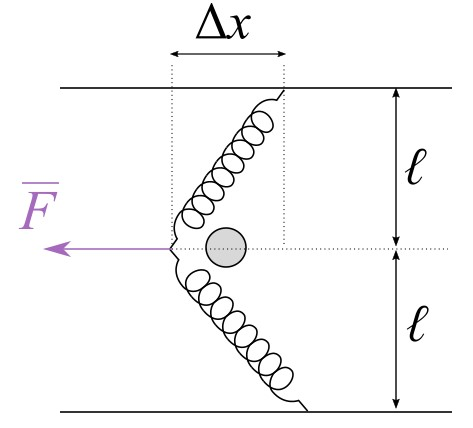

Kartioheiluri koostuu pallosta \(m\), joka on kiinnitetty \(\ell = 10\,\mathrm{m}\) pituisella langalla kattoon. Lanka on kulmassa \(\theta\) pystysuoran suhteen. Pallo kiertää kolme kokonaista kierrosta 12 sekunnissa. Kuinka suuri on kulma \(\theta\)?
Ratkaisu 4.1
Laatikko, joka painaa \(3 \,\mathrm{kg}\) liikkuu vaakasuoralla tasolla kohti massatonta jousta, jonka jousivakio on \(8\,\mathrm{\frac{N}{m}}\). Laatikon ja tason välinen liikekitkakerroin on \(0{,}5\). Juuri ennen kuin laatikko törmää jouseen se liikkuu nopeudella \(2\,\mathrm{\frac{m}{s}}\). Kuinka paljon jousi puristuu?
\begin{equation*}
\begin{array}{|r|r|}
\hline
\sqrt{0{,}42} & 0{,}64 \\ \hline
\sqrt{0{,}44} & 0{,}66 \\ \hline
\sqrt{0{,}47} & 0{,}68 \\ \hline
\sqrt{0{,}5} & 0{,}70 \\ \hline
\sqrt{0{,}62} & 0{,}78 \\ \hline
\sqrt{0{,}64} & 0{,}80 \\ \hline
\sqrt{2} & 1{,}41 \\ \hline
\sqrt{3} & 1{,}73 \\ \hline
\end{array}
\end{equation*}
Ratkaisu 4.2
Tarkastellaan kuvan mukaista ritsaa, joka koostuu kahdesta ideaalisesta jousesta. Jousilla on identtinen jousivakio \(k\) sekä lepopituus \(\ell\). Ritsalla ammutaan pieni pistemäinen kivi poikkeuttamalla sitä voimalla \(F\) matka \(\Delta x\) vasemalle. Kuinka suuri on kiven nopeus, kun se on kulkenut matkan \(\Delta x\)?

Ratkaisu 4.3